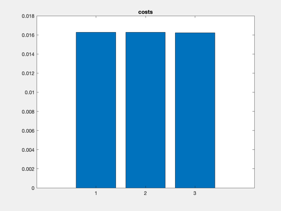
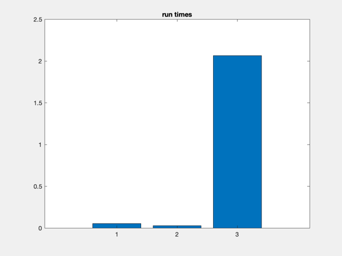

Demonstrate the different solutions found by the optimal assignment method and the privileged assignment method.
See also RotateState, TeamGoals_Structure, EstimateCost, GenerateTeamGoals, InitializeCostMatrix, OptimalAssignment, PopulateCostMatrix, PrivilegedAssignment, SetupAssignmentProblem, Goals2DeltaElem, DataSize ------------------------------------------------------------------------
Contents
- User-defined parameters
- compute initial state and desired team goals
- compute the cost estimates for each spacecraft
- define the assignment problem parameters
- create the cost matrix
- use the privileged assignment method (minimum metric)
- use the privileged assignment method (mean metric)
- use the optimal assignment method
- Create plots
------------------------------------------------------------------------- Copyright 2003 Princeton Satellite Systems, Inc. All rights reserved. Since version 7. -------------------------------------------------------------------------
clear power; clear costEstimate; fprintf('\nSetting up problem...\n'); %%%%%%%%%%%%%%%%%%%%%%%%%%%%%%%%%%%%%%%%%%%%%%%%%%%%%%%%%%%%%%%%%%%%%%%%%%%%%%%%% %%%%%%% BEGIN USER - DEFINED INFO %%%%%%%%%%%%%%%%%%%%%%%%%%%%%%%%%%%%%%%%%
Setting up problem...
User-defined parameters
% reference orbit %---------------- el0 = [6928.14, 0, 35.4*pi/180, 0, 0, 0]; % element differences for relative satellites %-------------------------------------------- nSC = 8; % initial team motion %-------------------- fType_init = 2; fSize_init = 0.2; % ID's of relative spacecraft %---------------------------- relIDs = [31 44 28 19 93 67 52 17]; % remaining fuel percentage %-------------------------- rfp = [.9 .8 .7 .6 .5 .4 .3 .2]; rfp = [.2 .3 .4 .5 .6 .7 .8 .9]; % fuel weighting factor %---------------------- x = 1; % weight %------- weight = power(rfp,-x); % desired team motion %-------------------- fType_des = 5; fSize_des1 = 0.5; nSC1 = floor(nSC/2); fSize_des2 = 1.0; nSC2 = nSC - nSC1; % the time window %---------------- window.startTime = 0; window.nOrbMin = 1; window.nOrbMax = 3; %%%%%%% END OF USER - DEFINED INFO %%%%%%%%%%%%%%%%%%%%%%%%%%%%%%%%%%%%%%%% %%%%%%%%%%%%%%%%%%%%%%%%%%%%%%%%%%%%%%%%%%%%%%%%%%%%%%%%%%%%%%%%%%%%%%%%%%%%%%%%% fprintf('\nGenerating team goals...\n');
Generating team goals...
compute initial state and desired team goals
%--------------------------------------------- tG0 = GenerateTeamGoals( el0, fType_init, fSize_init, nSC, [], [] ); dEl = []; k = 0; for i=1:tG0.nU, k = k + 1; geom = tG0.geometry(i); dEl(k,:) = Goals2DeltaElem( el0, geom ); for j=1:tG0.constraints(i).nDuplicates k = k+1; phase = tG0.constraints(i).phase(j); dEl(k,:) = Goals2DeltaElem( el0, RotateState(geom,phase) ); end end teamGoals1 = GenerateTeamGoals( el0, fType_des, fSize_des1, nSC1, 99, 5*pi/180 ); teamGoals2 = GenerateTeamGoals( el0, fType_des, fSize_des2, nSC2, 99, 5*pi/180 ); teamGoals = TeamGoals_Structure; teamGoals.nU = teamGoals1.nU + teamGoals2.nU; teamGoals.geometry = [teamGoals1.geometry, teamGoals2.geometry ]; teamGoals.constraints = [teamGoals1.constraints, teamGoals2.constraints]; ds0 = DataSize(teamGoals);
compute the cost estimates for each spacecraft
%----------------------------------------------- fprintf('\nEstimating cost for each spacecraft...\n'); for i=1:nSC costEstimate(i) = EstimateCost( el0, dEl(i,:), teamGoals, relIDs(i), window, weight(i) ); end
Estimating cost for each spacecraft...
define the assignment problem parameters
%-----------------------------------------
[N,M,P,Pu,Q,phi,u] = SetupAssignmentProblem( teamGoals );
create the cost matrix
%----------------------- fprintf('\nPopulating cost matrix...\n'); f = InitializeCostMatrix( teamGoals, length(relIDs) ); for i=1:N f = PopulateCostMatrix( f, costEstimate(i), teamGoals, relIDs ); end
Populating cost matrix...
use the privileged assignment method (minimum metric)
%------------------------------------- fprintf('\nPrivileged assignment method (min metric)...\n'); tic [order1,phi1,cost1,cv1] = PrivilegedAssignment( N, P, Pu, Q, f, phi, u, 1 ); t1 = toc;
Privileged assignment method (min metric)...
use the privileged assignment method (mean metric)
%------------------------------------- fprintf('\nPrivileged assignment method (mean metric)...\n'); tic [order2,phi2,cost2,cv2] = PrivilegedAssignment( N, P, Pu, Q, f, phi, u, 2 ); t2 = toc;
Privileged assignment method (mean metric)...
use the optimal assignment method
%---------------------------------- fprintf('\nOptimal assignment method...\n'); tic [order3,phi3,cost3,cv3] = OptimalAssignment( N, P, Pu, Q, f, phi, u ); t3 = toc;
Optimal assignment method...
Create plots
%-------------- fprintf('\nPlotting...\n'); figure, bar([cost1,cost2,cost3]), title('costs') figure, bar([t1,t2,t3]), title('run times') cost1uw = sum( cv1 ./ weight(order1) ); cost2uw = sum( cv2 ./ weight(order2) ); cost3uw = sum( cv3 ./ weight(order3) ); costSavings32UW = abs(cost3uw-cost2uw)/cost2uw*100; costSavings31UW = abs(cost3uw-cost1uw)/cost1uw*100; costSavings32 = abs(cost3-cost2)/cost2*100; costSavings31 = abs(cost3-cost1)/cost1*100; for i=1:nSC costVec1(order1(i)) = cv1(i); costVec2(order2(i)) = cv2(i); costVec3(order3(i)) = cv3(i); end costVec1UW = costVec1 ./ weight; costVec2UW = costVec2 ./ weight; costVec3UW = costVec3 ./ weight; fprintf('\nFinished.\n'); %--------------------------------------
Plotting... Finished. 